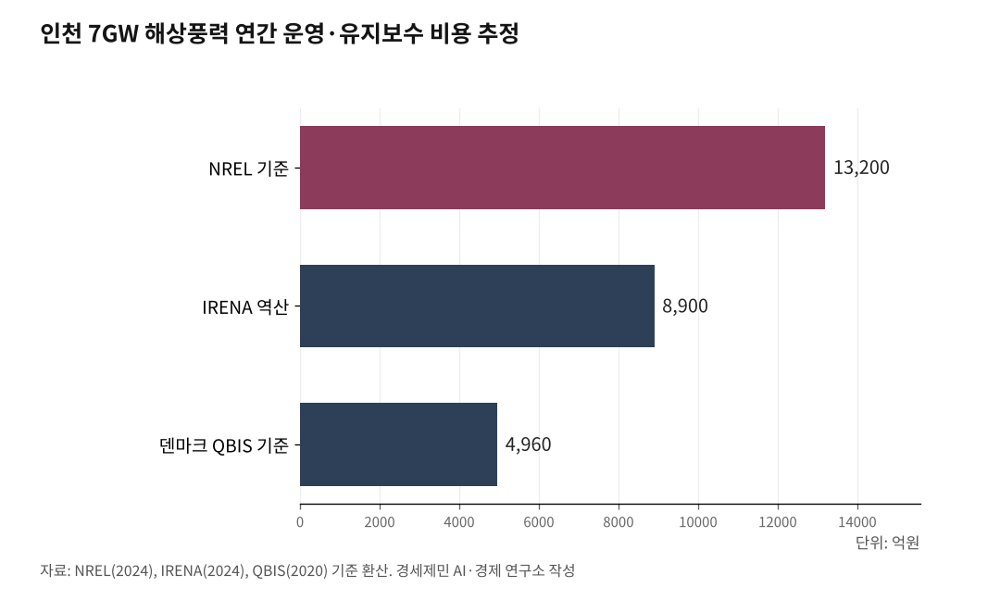

[인천해양산업, 생존기로④] 해상풍력 O&M(운영과 정비)
7GW 해상풍력 O&M, 25년간 33조시장…인천은 준비 없다
건설보다 큰 유지보수 시장, 에스비에르는 20년 준비 인천은 0
인천 앞바다에 들어설 해상풍력 터빈 370~470기는 25년간 매일 점검하고 수리해야 한다. 미국 국립재생에너지연구소 NREL(National Renewable Energy Laboratory) 기준으로 인천 7GW(기가와트) 해상풍력의 연간 운영·유지보수(O&M, Operation & Maintenance) 비용은 1조3000억원이다. 25년 누적 33조원이다.

건설비 약 53조원에 버금가는 거대 시장이 열리는데, 정작 인천에는 이 시장을 잡을 연구기관도 전문기업도 없다.
1. O&M은 건설보다 크다
해상풍력은 "짓는 사업"이 아니다. "25년간 돌보는 사업"이다. 건설은 3~5년이면 끝나지만, 그 뒤로 25년간 터빈을 돌리고 고치고 부품을 바꾸는 일이 이어진다.
O&M 비용이 얼마나 되는지, 3가지 방식으로 교차검증했다.
첫째, NREL이 2024년 11월 발간한 "Cost of Wind Energy Review: 2024 Edition" 보고서를 보면, 고정식 해상풍력의 연간 운영비는 kW(킬로와트)당 135달러(약 18만9000원)다. 12MW(메가와트) 터빈 50기로 구성한 600MW 표준 사업에서 산출한 수치다.
인천 7GW에 적용하면 연간 O&M 비용은 약 1조3200억원(환율 1400원/달러), 25년 누적 33조원이다.
둘째, 건설비 대비 비율로 계산해도 결과는 같다. NREL 기준 연간 운영비가 건설비의 2.49%다. 인천 7GW 총사업비 약 53조원에 2.49%를 곱하면 연간 약 1조3200억원이 나온다.
셋째, 국제재생에너지기구 IRENA(International Renewable Energy Agency)가 발간한 "Renewable Power Generation Costs in 2024" 보고서의 발전단가(LCOE, Levelized Cost of Energy, 발전소 수명 동안 드는 총비용을 총발전량으로 나눈 값)를 역산해도 연간 약 8900억원이다. 중국의 저비용 구조가 세계 평균을 끌어내린 탓에 NREL보다 낮지만, 연간 9000억원에 가깝다.
유럽 기준도 확인했다. 덴마크 해운협회(Danish Shipping)와 풍력에너지협회(Wind Denmark), 에너지협회(Danish Energy)가 2020년 7월 QBIS(Quantifying Business Impact on Society, 덴마크 사회경제영향분석기관)에 의뢰해 발간한 "Socio-economic impact study of offshore wind" 보고서를 보면, 해상풍력 연간 운영비 평균은 MW당 4만8000유로(약 7080만원)다.
7GW에 적용하면 연간 약 4960억원(환율 1475원/유로)이다. 유럽 성숙 시장의 낮은 비용을 반영한 수치지만, 이마저도 연간 5000억원에 육박한다.
어떤 방식을 적용해도 인천 7GW 해상풍력의 연간 O&M 비용은 최소 5000억원에서 최대 1조3000억원이다. 25년 누적으로 12조~33조원이다.
주목할 점이 있다. NREL 기준 O&M 비용 가운데 78%는 선박 운용비다. kW당 135달러 중 105달러(약 14만7000원)가 인력수송선 CTV(Crew Transfer Vessel)와 해상작업지원선 SOV(Service Operation Vessel)를 운용하는 데 들어간다. 선박 없이는 O&M 자체가 불가능하다.

2. 에스비에르, O&M으로 20년을 먹고산다
덴마크 에스비에르(Esbjerg)항은 유럽 해상풍력의 심장이다. 면적 450만㎡, 입주 기업 200개 이상, 고용 8000~1만명.
2001년 덴마크 최초 대규모 해상풍력단지 혼스 레브 1(Horns Rev 1) 이후 60건 넘는 사업에 관여했고, 누적 출하 용량만 24GW 이상이다. 유럽에 설치된 해상풍력 설비의 80%가 이 항만을 거쳤다.
에스비에르항 매출 구조를 보면 O&M이 왜 중요한지 분명해진다. 2024년 연차보고서를 보면, 매출 유형별로 용지 임대가 59%를 차지한다. 선박·화물 수수료 29%, 크레인 서비스 5%, 기타 7%다.
용지 임대가 압도적이다. O&M 기업들이 10~25년 장기 계약으로 부두·야적장·창고를 점유하는 구조가 항만 안정 수입의 핵심이다. 건설은 한 번 끝나면 그만이지만, O&M은 25년간 매달 임대료를 낸다.
현재 에스비에르를 기지로 O&M 서비스를 받는 풍력단지는 6곳이다. CTV 30척 이상을 동시에 수용할 수 있다. 2024년 선박 입출항은 5712회였다.
에스비에르항 최고상업책임자(CCO) 예스페르 방크(Jesper Bank)는 "1GW 해상풍력이 수명 기간에 약 9500개 일자리를 만드는데, 이 가운데 48%가 O&M 관련"이라고 했다. 건설은 3~5년이지만 O&M은 25년이다. 누적하면 일자리 절반이 O&M에서 나온다.
수익으로 환산하면 어떻게 될까. QBIS 보고서에 따르면 1GW 해상풍력단지의 O&M 항만 직접 수입은 연간 약 50만유로(약 7억4000만원)다. 25년이면 1250만유로(약 184억원)다.
여기에 지역 공급업체 매출까지 합치면 연간 320만~910만유로(약 47억~134억원), 25년간 8000만~2억2700만유로(약 1180억~3348억원)로 뛴다. O&M 항만과 주변 공급업체에서 연간 59~81명의 정규직 일자리가 생긴다.
인천 7GW에 이 수익 구조를 적용하면 어떻게 되나. 항만과 지역 공급업체 매출을 합쳐 연간 330억~940억원, 25년간 8250억~2조3500억원으로 추산된다.
3. 화석연료에서 풍력으로, 기업이 바뀌었다
에스비에르가 처음부터 풍력 도시였던 것은 아니다. 원래 북해 유전을 지원하는 오일·가스 서비스 거점이었다. 20년에 걸쳐 해상풍력 O&M 세계적 중심지로 탈바꿈했다.
셈코 마리타임(Semco Maritime)은 에스비에르에 본사를 둔 에너지 엔지니어링 기업이다. 40년 넘게 북해 오일·가스 해양 구조물을 설계하고 유지보수했다.
2024년 연차보고서를 보면, 직원 2326명, 총매출 56억4000만DKK(Danish Krone, 덴마크크로네·약 1조1000억원)다. 주목할 숫자는 재생에너지 매출 비중이다. 2021년 24%였던 것이 2024년 58%로 뛰었다.
3년 만에 재생에너지가 주력 사업이 됐다. 수주잔고를 보면 변화가 더 뚜렷하다. 2024년 말 기준 수주잔고의 88%가 재생에너지다.
2023년에는 독일 풍력 서비스 기업 빈트 멀티플리카토어 그룹(Wind Multiplikator Group)을 인수해 O&M 역량을 강화했다. 대형부품교체(MCE, Major Component Exchange)를 프랑스와 영국에서 최초로 완수했다. 40년 된 오일·가스 기업이 사실상 재생에너지 기업으로 변신한 것이다.
MHO-Co는 2015년 에스비에르에서 설립된 CTV 전문 해운사다. 선대를 5척에서 12척으로 늘렸고, 2026년부터 3년간 최대 10척을 추가 건조할 계획이다.
새 선박은 복합동력(hybrid) 엔진에 바이오연료와 메탄올에 대응하는 친환경 선박이다. 이 회사 선원 상당수가 오일·가스 산업과 어업에서 전환한 인력이다. 전통 해양산업 종사자가 해상풍력 O&M 인력으로 전환된 실증 사례다.
스웨덴 에너지 기업 바텐팔(Vattenfall)은 2022년 에스비에르에 2200㎡ 규모의 국제 중앙 창고를 열었다. 130톤 크레인을 갖추고 덴마크·네덜란드·영국 풍력단지에 주요 부품과 케이블을 공급하는 O&M 물류 거점이다.
바텐팔 O&M 전달 총괄 에리크 힌시(Erik Hiensch)는 "이 창고가 들어서면서 에스비에르가 바텐팔 해상풍력 물류의 수도가 됐다"고 했다. 에스비에르가 터빈을 실어 보내는 항만에서 O&M 물류 중심지로 진화했다는 뜻이다.
4. 인천, O&M 전문기업 0개
인천 앞바다에 수십조원짜리 해상풍력 사업이 추진되는 동안, 인천의 O&M 현실은 어떤가.
2024년 기준 국내에서 상업 운전 중인 해상풍력단지는 제주 탐라(30MW), 전북 고창·부안 서남권(60MW), 전남 영광(34.5MW) 등 3곳뿐이다. 합쳐서 124.5MW다. 에스비에르가 출하한 24GW의 0.5%다.
국내 O&M 전문기업도 손에 꼽는다.
니어스랩(Nearthlab)은 2015년 설립된 AI 자율비행 드론 블레이드 점검 기업이다. 30개국 이상에 수출하고 지멘스 가메사(Siemens Gamesa), GE, 베스타스(Vestas)가 공식 채택했다. 풍력 점검 분야 세계 3위 안에 드는 강소기업이다.
케이윈드(K-Wind)는 2019년 설립됐다. 밧줄을 이용한 고소작업 기술인 로프액세스(rope access)를 활용해 블레이드·타워·나셀(nacelle, 발전기와 기어박스를 담는 수납공간) 외장을 점검하고 수리한다. 국제로프접근기술협회 IRATA(International Rope Access Trade Association) 레벨 3, 노르웨이 선급 DNV(Det Norske Veritas) 풍력발전기 검사·수리 인증, 세계풍력기구 GWO(Global Wind Organisation) 인증을 보유한 국내 대표 O&M 기업이다.
에이투엠(A2M)은 국내 최초 풍력발전 통합운영관리 체계 바이윈드(byWIND)를 개발했다. 설비 상태를 실시간 감시하고 고장을 사전에 예측한다.
문제는 이 기업들이 모두 서울에 있다는 것이다. 인천에 해상풍력 O&M 전문기업은 단 한 곳도 없다.
인력은 더 심각하다. 한국풍력산업협회와 한국에너지공단이 발간하는 풍력산업 현황 보고서에 O&M 전용 인력 통계는 별도로 공개되지 않는다.
운영 중인 설비 124.5MW에 해외 계수(1GW당 O&M 직접 인력 59~81명)를 적용하면 국내 O&M 인력은 7~10명 수준이다. 케이윈드, 니어스랩, 발전사 자체 O&M 인력을 모두 합쳐도 100명이 안 될 것으로 추정된다.
7GW가 가동되면 상황이 완전히 달라진다. QBIS 분석 방식을 적용하면 O&M 항만과 지역 공급업체에서만 연간 413~567명이 필요하다.
기술인력으로 범위를 넓히면 700~1330명, 직·간접·유발 일자리까지 합치면 2800~7000명이다. 지금부터 양성하지 않으면 해외 인력에 전면 의존할 수밖에 없다.
인천 앞바다에는 오스테드(Ørsted) 1.4GW, 오션윈즈(OceanWinds) 1.1GW, 남동발전 640MW, 인천시 공공주도 2.2GW 등 약 5.6GW 규모 사업이 추진 중이다. O&M 기지 계획은 인천신항 해상풍력 전용부두(안벽 720m, 배후 31만4400㎡)가 전부다. 에스비에르 450만㎡의 7%다.
5. O&M 연구 공백이 만드는 악순환
O&M 비용을 줄이려면 연구가 뒷받침돼야 한다. 터빈이 커지면 O&M 비용이 어떻게 변하는지, CTV와 SOV를 어디에 몇 척 배치해야 최적인지, 기상 조건에 따라 정비 일정을 어떻게 짜는지를 연구해야 한다.
영국 스트래스클라이드대학(University of Strathclyde) 도넬리(Donnelly) 연구팀이 2024년 국제학술지 "Wind Energy Science"에 발표한 논문을 보면, 15MW 직접구동(direct-drive) 터빈과 중속 기어박스 터빈의 O&M 비용 차이가 1.58~5.78%에 불과했다. 터빈이 대형화될수록 동력전달장치(drivetrain) 종류에 따른 비용 차이가 줄어든다는 뜻이다.
이런 연구가 O&M 전략을 바꾼다. 인천에서 이런 연구를 할 기관이 없다.
O&M 공급망 설계도 연구 없이는 불가능하다. 기어박스는 10~15년, 블레이드는 5~10년 주기로 대규모 보수나 교체가 필요하다.
에스비에르에는 터빈 서비스, CTV·SOV 운영, 에너지 엔지니어링, 해상 물류, 블레이드 수리, 크레인·중량물 인양, 인력 교육 등 업종별로 세분화된 공급업체가 밀집해 있다. 인천은 어떤 기업이 어떤 부품을 공급할지 설계조차 없다.
인력 양성은 더 급하다. 에스비에르에는 GWO 인증 교육센터가 여럿 있고, 어업과 오일·가스 산업에서 전환한 인력이 해상풍력 O&M의 중추를 이루고 있다.
QBIS 보고서에 따르면 1GW당 약 1400명의 해양 노동자(SOV·CTV 승조원 등)가 필요하다. 7GW면 약 1만명이다. 인천에는 해양대학도 없고(5편에서 다룬다), GWO 인증 교육기관도 없다.
악순환이 뚜렷하다. 연구기관이 없으니 O&M 전략이 나오지 않는다. 전략이 없으니 전문기업을 유치할 수 없다. 전문기업이 없으니 해외에 의존한다. 해외에 의존하면 25년간 발생하는 부가가치가 고스란히 유출된다.
6. 지금 시작해도 늦었다
오스테드 인천 사업은 2023년 11월 1.6GW로 발전사업허가를 받았다가 2025년 3월 지역 이해관계자 협의를 거쳐 1.4GW로 조정됐다. 800MW와 600MW 두 개 풍력단지로 나뉘어 환경영향평가와 단지 설계가 진행 중이다.
2025년 8월에는 해저지반조사도 마쳤다. 건설 착공이 다가오고 있다.
O&M 기지는 건설 착공 전에 확정된다. 에스비에르에서 토르(Thor) 풍력단지(1GW) O&M 항만으로 비데 산데(Hvide Sande)나 토르스민데(Thorsminde)를 검토할 때, 항만의 O&M 기업 입주 역량이 핵심 평가 기준이었다.
QBIS 보고서는 건설 사업만 유치하고 O&M을 놓치면 투자 회수에 실패할 수 있다고 경고했다. 덴마크 그레노(Grenaa) 항만이 그런 사례다.
인천신항 해상풍력 전용부두에 민간투자 3200억원이 확정됐다. 건설 인프라는 갖추고 있다. 그런데 O&M 인프라 설계는 빠져 있다.
어떤 O&M 기업을 유치할 것인지, CTV·SOV 전용 부두를 어디에 배치할 것인지, 부품 창고와 정비 야드를 어떻게 설계할 것인지, 인력 교육 시설을 어디에 둘 것인지 연구가 없다.
에스비에르는 2001년 혼스 레브 1부터 20년에 걸쳐 O&M 생태계를 만들었다. 인천은 2030년 첫 상업운전까지 5년도 남지 않았다.
해양산학융합센터(인천해양항만수산진흥원)가 O&M 연구와 인력 양성, 공급망 설계를 총괄해야 한다. 25년간 매년 수천억원이 발생하는 시장을 인천 경제의 자양분으로 만들지, 고스란히 해외로 흘려보낼지는 지금 결정된다.
에스비에르가 20년에 걸쳐 증명한 것처럼, O&M 생태계는 하루아침에 만들어지지 않는다.
참고문헌
·"Cost of Wind Energy Review: 2024 Edition", NREL, 2024.11. https://www.nrel.gov/docs/fy25osti/91775.pdf
·"Socio-economic impact study of offshore wind(Final Technical Report)", QBIS·Danish Shipping·Wind Denmark·Danish Energy, 2020.7.1. https://danishshipping.dk/.../technical-report...
·"Renewable Power Generation Costs in 2024", IRENA, 2025.7. https://www.irena.org/.../Renewable-Power-Generation...
·Donnelly, O., Carroll, J.(2024). "Operation and maintenance cost comparison between 15 MW direct-drive and medium-speed offshore wind turbines", Wind Energy Science, 9(6), 1345-1362. https://doi.org/10.5194/wes-9-1345-2024
·"Port Esbjerg Annual Report 2024", Port Esbjerg, 2025. https://portesbjerg.dk
·"Semco Maritime Annual Report 2024", Semco Maritime, 2025. https://semcomaritime.com
·"항만시설사용료 요율 고시", 해양수산부·인천항만공사, 현행
·"인천 해상풍력 배후항만 조성 계획", 인천광역시, 2024.